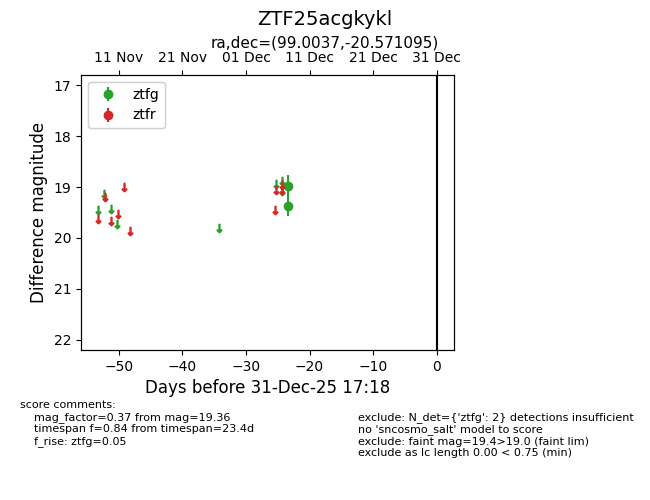
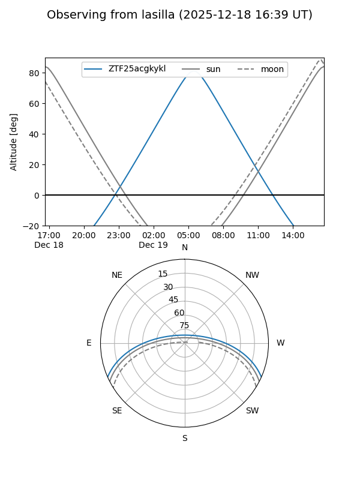
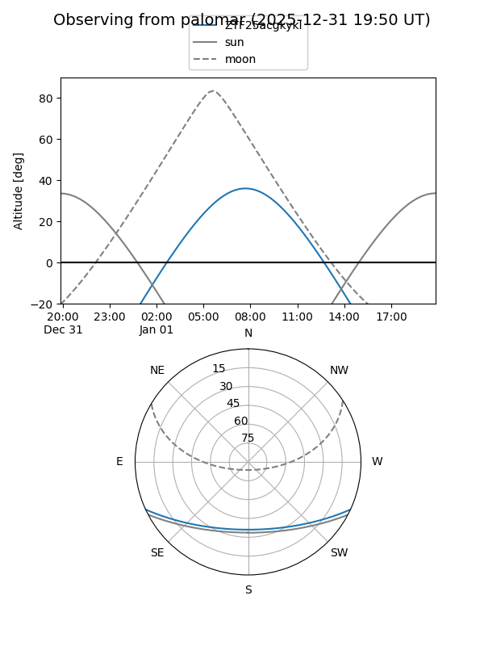

ZTF25acgkykl
Target ZTF25acgkykl at 2025-12-18 11:17
Aliases and brokers:
FINK: fink-portal.org/ZTF25acgkykl
Lasair: lasair-ztf.lsst.ac.uk/objects/ZTF25acgkykl
ALeRCE: alerce.online/object/ZTF25acgkykl
alt names
ZTF25acgkykl (ztf,fink_ztf)
Coordinates:
equatorial (ra, dec) = 99.0037,-20.57109
equatorial (HMS+DMS) = 06:36:00.90,-20:34:15.94
galactic (l, b) = (229.8432,-12.48885)
Photometry
last ztfg=19.36
2 ztfg detections
Lightcurve

Visibility


Additional plots